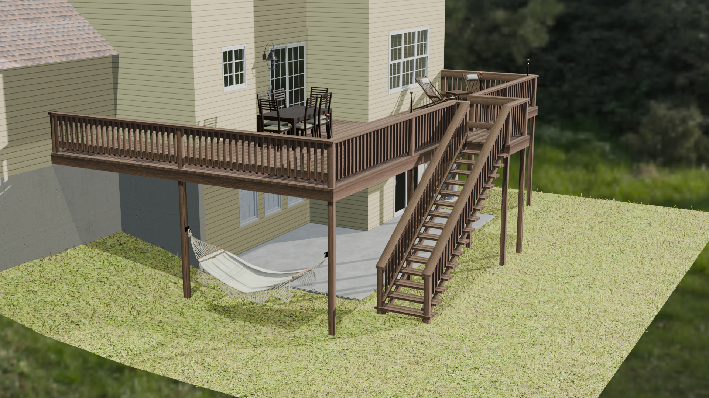

3D Renderings
Bring your ideas to life with custom 3D renderings built from your 2D plans, measurements, and photos. Whether you're planning a renovation, preparing a real estate listing, or just looking to visualize a space before it's built, this service turns rough inputs into clean, detailed visuals that tell the full story of your design.
With a focus on clarity and realism, each rendering is carefully crafted to match your vision. You send over the materials, and I’ll take care of translating them into high-quality 3D imagery that’s easy to share, present, or build from—no guesswork required.